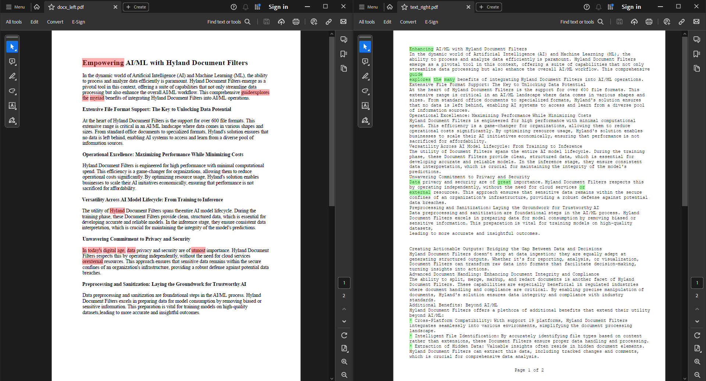

Hyland Document Filters 24.2 Release
The new 24.2 release of Hyland Document Filters introduces a range of features designed to streamline document comparison, improve accessibility, and integrate advanced OCR technology, with features being directly influenced by the Document Filters community. With these updates, Document Filters continues to evolve as a versatile tool that adapts to the diverse needs of its users.
Watch as we walk through a few of the new features in the 24.2 release of Document Filters.
Document Comparison - Different File Formats
Document Filters now includes a powerful feature for comparing text-based documents, such as PDFs and Microsoft Word documents. This new functionality allows users to quickly identify differences and changes, streamlining the review process, as well as reducing the cost needed to pass this comparison information to an AI solution. Read more about it in the Document Filters documentation.
Comparing a Microsoft Word document with a Text document, while ignoring the formatting differences and footers.
Comparing the formatting of 2 Microsoft Word documents.
Accessibility Information Extraction
In order to extract every piece of information from documents, Document Filters has added the ability to extract accessibility information from Microsoft Office documents. Not only does this extract more information, but it also allows consumers to build applications that are fully accessible, ensuring that the end-users' needs for accessible content are met. Explore how to extract this content in the Document Filters documentation.
Tesseract OCR Integration
Document Filters now supports seamless integration with any user-supplied version of the Tesseract OCR engine. This enhancement empowers consumers to leverage advanced OCR capabilities within their existing workflows, enhancing text recognition and extraction from images and scanned documents. Detailed instructions on how to utilize any version of the Tesseract OCR engine are available in the Document Filters documentation.
File Type Categorization
In order to be able to identify the type of application that created a file, Document Filters has implemented a new file type categorization. Categories range from Text, to Spreadsheet, to Archive, with many more listed under the IGR_FILETYPE_CATEGORY type in the documentation.
Release Links
Document Filters 24.2 Release Notes
Document Filters 24.2 Software Bill of Materials
Enhancement Requests
Document Filters Resources
Document Filters on GitHub
Document Filters on NuGet
Document Filters Samples
Document Filters Documentation
Document Filters Release Notes
Hyland